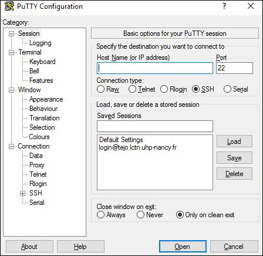

Connexion à Tejo depuis l'extérieur
Procédure pour ce connecter au serveur de calcul "tejo" du PCT
Ouvrir un VPN (Virtual Private Network ou réseau privé virtuel)
Configuration du VPN
suivant le client VPN choisi,
lancer un terminal :
- Sous Linux : Utilisez le raccourci clavier: Ctrl + Alt + T ouverture du terminal.
- Sous Windows : utilisation du logiciel PuTTY (gratuit). Dans la fenêtre Host Name, tapez l'adresse du serveur : tejo.lctn.uhp-nancy.fr, puis cliquer sur le bouton Open vous pouvez aussi entrez l'adresse avec votre login : login@tejo.lctn.uhp-nancy.fr le terminal se lance et vous demande votre password, renseignez le et vous êtes dans votre "Home" Avec Putty, vous pouvez enregistrer ces informations dans la fenêtre Saved Sessions, puis cliquer sur le bouton Save. A votre prochaine connexion, cliquer sur l'adresse de tejo sauvegarder puis sur le bouton Load, cliquer sur le bouton Open. Le terminal se lance. 
Sous Macintosh : utilisation de "Terminal" qui se trouve dans le dossier "Utilitaires" du dossier "Applications"
{kind=link}